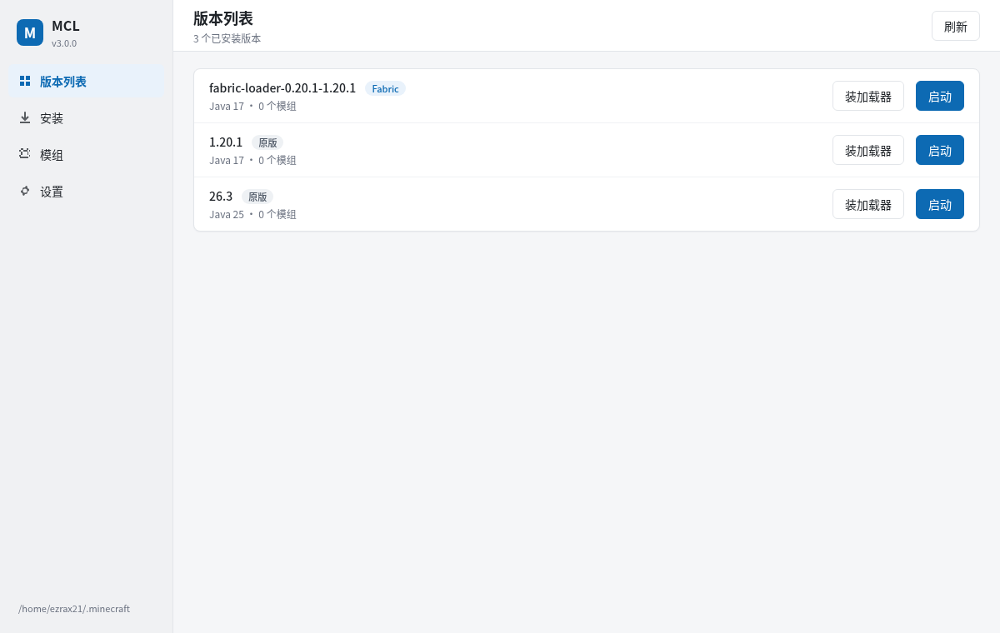

原生窗口
Linux 用 WebKitGTK，Windows 用 WebView2，双击就是桌面应用，不是浏览器标签。
开源、轻量的 Minecraft: Java Edition 启动器。下载原版、装加载器、导入整合包、管理光影，双击就能玩。
Windows 10/11 · Linux x64 · 开源 GPL-3.0-or-later

从下载到启动只做必要的事：快、干净、不塞广告，也不偷偷上传数据。
Linux 用 WebKitGTK，Windows 用 WebView2，双击就是桌面应用，不是浏览器标签。
原版、Fabric、Quilt、Forge、NeoForge 一条龙，Java 按版本要求自动选。
Modrinth .mrpack 与 CurseForge zip，自动补原版、加载器和 overrides。
从 Modrinth 搜光影、材质包，装进当前实例，随时删。
读 crash-report，直接告诉你 Java 版本、内存、缺前置还是模组冲突。
设备代码流登录正版账号，token 只存本机；离线模式始终可用。
等待 Mojang 白名单左侧导航、白底卡片、蓝色主色；深色主题跟随系统。
按钮指向 GitHub Release 的实际产物；下载失败就去 Releases 页面。
Windows 10/11 x64 · WebView2 自带
安装包Inno Setup，开始菜单 + 桌面快捷方式 便携版解压即用，含 mclw.exe 与 mcl.exex64 · 需要 WebKitGTK + PyGObject
Debian / Ubuntu.deb · dpkg -i Fedora / RHEL.rpm · rpm -i Arch Linux.pkg.tar.zst · pacman -U 便携版.tar.gz · 自带依赖SHA256SUMS.txt · 其他平台：查看 GitHub Releases
不画饼：下面是真实状态，没做完的会直接写出来。